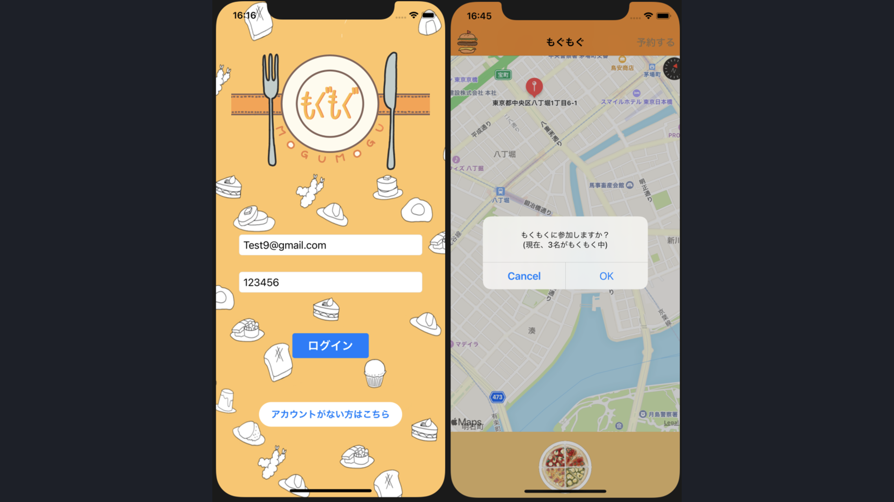

File location: https://kt12.jp/index.html
Successfully opened index.html !
KITA Ryota
engineering | design
> about
コンピュータサイエンス大好きデータサイエンス学徒．
VScodeを開いても中のターミナルでVim使っちゃう人．
アルバイトではPC教室のインストラクターとして
ScratchやPythonによるプログラミングや，
Officeソフトの使い方を教えている．
高校： 中部大学第一高等学校 ==> 電気情報コース
ー 電気電子・情報分野の資格・検定を30個ほど取得し、
愛知県高等学校職業教育技術認定事業グランプリを受賞
大学： 武蔵野大学 ==> データサイエンス学科
ー ゼミや有志PJでの研究活動，学外ハッカソンを中心に活動．
特に，ハッカソンでは数多くの賞を受賞．
また，10年後の後輩まで続く文化を残すことを目標に，
学内交流会や勉強会を数多く企画・運営している．
研究分野：
- - 言語処理系
- - プログラミング教育
- - 探索・最適化アルゴリズム
- - 群知能
- - 自然言語処理
趣味：
- - イラスト制作
- - vimrcの育成
- - Arch Linuxの育成
- - 講義資料制作
- - イベント企画・運営
> news
-
2022-08-29:
データサイエンス学部生がオンラインハッカソンにて優秀賞を受賞 -
2022-06-22:
データサイエンス学部３年生がオンラインハッカソンにて努力賞を受賞 -
2022-03-30:
【武蔵野大学】ヤフー主催の学生ハッカソンイベントにて
データサイエンス学部生が優秀賞を受賞！ - PRTIMES -
2022-03-24:
【武蔵野大学】データサイエンス学部１・３年生３名が
「情報処理学会 第84回全国大会」で「学生奨励賞」を受賞 - PRTIMES -
2021-10-01:
【武蔵野大学】学生対象のアプリ開発イベント『技育CAMP』にて
データサイエンス学部生の３チームが「努力賞」を受賞 - PRTIMES -
2021-09-24:
【武蔵野大学】今夏開催のアプリ開発イベントにて
データサイエンス学部生が優勝！ - PRTIMES -
2020-02-14:
愛知県高等学校職業教育技術認定事業グランプリ受賞
> skills
- - Python
- - Go
- - JavaScript
- - HTML/CSS
- - C
- - C#
- - Swift
- - VimScript
- - その他
・データサイエンス領域(MLDL・NLP等)
・サーバサイド(Django, Flask, FastAPI)
・リファクタリングツール制作
・サーバサイド(net/http, Gin, Fiber, beego)
・クライアントサイド(Vue.js, Vuetify)
・Webデザイン
・Python/Go ライブラリ
・ゲーム開発(Unity)
・アプリ開発(SwiftUI)
・Vimプラグイン
・データベース(PostgreSQL, MySQL, SQLite)
・Git/GitHub
・Docker
・Heroku
・Amazon EC2
・GCP(App Engine, Cloud Run)
> works
-
2022-09:
フッ軽に予定を予約できるカレンダー 'FU-CALENDAR'
技育展2022(株式会社サポーターズ)
北椋太
Tecknology : Vue.js / Vuetify / Go / Gin / PostgreSQL / Docker / AmazonEC2
Keyword : Webアプリ開発
Abstract : 誘って欲しい日時・内容を登録するカレンダーアプリケーション「FU CALENDAR」
"誘われ待ち"をアピールすることで簡単に遊びをスケジューリングできるアプリケーション
-
2022-08:
スライドデザイン自動生成システム 'preGen'
技育CAMP オンライン開発合宿vol.7(株式会社サポーターズ) 優秀賞
( 北椋太, 他3人 )
Tecknology : Python / FastAPI / PostgreSQL / React.js / Material-UI / Docker
Keyword : Webアプリ開発 / 自然言語処理 / カラーイメージスケール
Abstract : テンプレートに文章を入力すると自動でスライドへ変換される．
配色・配置・ロゴ・強調箇所を自動で設定する.
-
2022-07:
クリエイターをつなぐマッチングアプリ 'Hack-a-Matcher'
技育CAMP オンライン開発合宿vol.5(株式会社サポーターズ)
( 北椋太 )
Tecknology : Go / Fiber / Vue.js / MySQL / Docker / AmazonEC2
Keyword : Webアプリ開発
Abstract : クリエイター同士をマッチングさせるアプリケーション「Hack-a-Matcher」
プロフィール・掲示板・チャットなどの機能を実装．
-
2022-06:
フッ軽に予定を予約できるカレンダー 'FU CALENDAR'
技育CAMP オンライン開発合宿vol.3(株式会社サポーターズ) 努力賞
( 北椋太 )
Tecknology : Go / PostgreSQL / Heroku
Keyword : Webアプリ開発
Abstract : 誘って欲しい日時・内容を登録するカレンダーアプリケーション「FU CALENDAR」
"誘われ待ち"をアピールすることで簡単に遊びをスケジューリングできるアプリケーション
-
2022-03:
ブロックプログラミングによる教育パズルゲーム 'Gazeat'
Open Hack U 2021 Online Vol.4 優秀賞
( 北椋太 , 石井雄大 , 稲荷太良 , 山野一樹 , 杉山彩子 )
Tecknology : Python / Django / Vue.js / Blockly / Docker / Heroku
Keyword : ゲーム開発 / 教育 / アルゴリズム / ブロックプログラミング
Abstract : ユーザではなくAIがパズルを解くためのアルゴリズムを
ブロックで構築し，課題解決を目指して競い合う教育アプリケーション．
-
2022-03:
カッコウ探索アルゴリズムを応用した
ユーザの嗜好に合致した抽象画のリコメンデーション方式情報処理学会 第84回全国大会 学生奨励賞
( 植田麻実 , 北椋太 , 岡田龍太郎 , 峰松彩子 , 中西崇文 )
Tecknology : Python / scikit-learn / OpenCV
Keyword : カッコウ探索 / 群知能 / レコメンダシステム / 抽象画
Abstract : 群知能であるカッコウ探索アルゴリズムを応用することで，
感覚的な判断を要する抽象画のリコメンデーションシステムを実現．
-
2022-03:
ソースコードの構文木表現による
構造類似性を用いた自動関数生成方式DEIM2022 第14回データ工学と情報マネジメントに関するフォーラム
( 北椋太 , 岡田龍太郎 , 峰松彩子 , 中西崇文 )
Tecknology : Python
Keyword : コードクローン / リファクタリング / 関数生成
Abstract : ソースコードの構文木からコードクローンを検出し，
関数に置き換えるリファクタリングツール
-
2021-09:
もくもく会マッチングアプリ 'もぐもぐ'
技育CAMP オンライン開発合宿vol.9(株式会社サポーターズ) 努力賞
( 北椋太 , 石井雄大, 小宮和真 , 杉山彩子 )
Tecknology : Swift / SwiftUI / Firebase
Keyword : アプリ開発 / 予約システム / もくもく会
Abstract : 他のエンジニアと作業する「もくもく会」を
オフラインでも気軽に行うための予約システムiOSアプリ

-
2021-08:
金魚視点の金魚すくいゲーム '金魚すくわれ'
お盆deハッカソン(株式会社TechBowl)
( 北椋太 , 村上唯希 , 大西力登 , 池上藍羽 )
Tecknology : C# / Unity
Keyword : ゲーム開発
Abstract : 金魚視点の金魚すくいiOS・Webアプリ．
-
2021-08:
ピクトグラムの強化による可視化および
Mediapipeによる姿勢強制トレーニングアプリ技育CAMP オンライン開発合宿vol.7(株式会社サポーターズ) 努力賞
( 北椋太 , 石井雄大, 山本崚介 )
Tecknology : Python / MediaPipe / Streamlit
Keyword : Webアプリ開発 / 姿勢推定 / 可視化
Abstract : 姿勢推定により筋トレの回数をカウントし，その運動量に応じて
ピクトグラムが肉付けされ，目標までの割合を可視化するWebアプリ．
-
2021-01:
テキストデータを対象とした
文章における特有表現に着目した意見抽出方式情報処理学会 第83回全国大会
( 池上藍羽, 石井雄大 , 北椋太 , 中西崇文 )
Tecknology : Python / MeCab / oseti
Keyword : 自然言語処理 / 意見抽出 / 可視化
Abstract : 様々な文章から意見を抽出し，文章の形式ごとに
意見の割合及び，主なトピックについての可視化を行った．
-
2020-06:
共起ネットワークを用いた
新型コロナウイルスに関するツイートの可視化武蔵野大学オープンキャンパス2020 展示作品
( 北椋太 , 池上藍羽, 石井雄大 , 稲荷太良 , 中西崇文 )
Tecknology : Python / MeCab / NetworkX / Twitter API
Keyword : 自然言語処理 / 共起ネットワーク / 可視化 / Twitter
Abstract : 新型コロナウイルスに関連する話題の分散度合いや，
時期・時間による変化を分析し，可視化を行った．